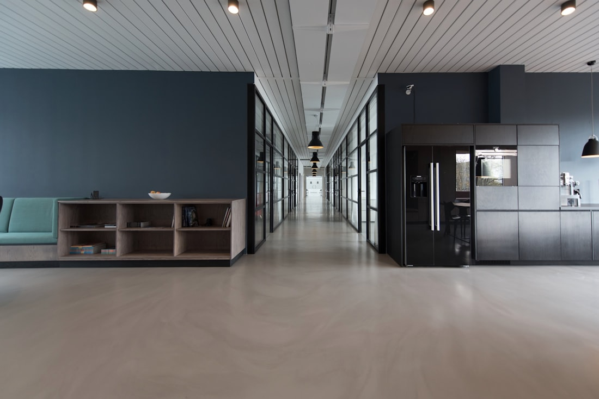

Retail, office, and land for sale and lease across Pensacola and the Gulf Coast. On-market opportunities and off-market assignments, sourced and negotiated with financial discipline.
Corey O’Kelley advises on retail, office, and land throughout Pensacola and Northwest Florida, on both sides of the table. Some opportunities are openly marketed, and others are quiet, off-market assignments shared directly with qualified buyers, tenants, and investors. Because availability moves quickly and Corey carries no IDX feed, the most reliable way to see what fits is to tell him your criteria.
Many occupiers and investors begin their search on national commercial listing platforms like LoopNet, where a fraction of the real inventory ever appears. Corey works the local market the listing portals miss, the owner relationships, the pocket assignments, and the spaces that change hands before a sign ever goes up. The three asset classes below are where his focus runs deepest.
Storefronts, strip centers, single-tenant net-lease buildings, and pad sites across the Pensacola trade area. Retail real estate lives or dies on the fundamentals beneath the rent, traffic counts, co-tenancy, visibility, parking, and the strength of the lease itself, and Corey reads each of them before a deal ever reaches terms.
Whether you are an owner repositioning a center, a landlord backfilling a vacancy, or a tenant choosing between corners, the question is the same: does this location support the business it has to carry? Twenty years in specialty finance means that question gets answered with numbers, not optimism.
What Corey sources: in-line and end-cap shop space, single-tenant net lease, strip and neighborhood centers, and retail pad sites along the corridors that matter.
Suburban, medical, and professional office across Pensacola and the surrounding submarkets, for lease and for sale. Office decisions carry long tails, build-out cost, term, escalations, and the renewal you will face years from now, so the lease structure matters as much as the address.
For tenants and owner-users, Corey runs site selection against real occupancy cost, not just the quoted rate. For landlords and owners, he positions space to the right occupier and structures terms that protect long-term value. Either way, the goal is a building that works for the way the business actually operates.
What Corey sources: professional and medical office suites, owner-user buildings, suburban office, and full-floor or multi-suite opportunities for tenants and investors alike.

Commercially zoned parcels, development sites, and pad-ready land across Northwest Florida. Land is the asset class where the value sits in what is not yet visible, zoning, entitlements, utilities, access, and the use the site can ultimately support, and getting those right early is what protects the project later.
Corey helps buyers test feasibility before they commit and helps owners position raw or underused ground to the right developer or end-user. The analysis stays grounded in what the market will actually pay for the use the site can deliver.
What Corey sources: commercially zoned parcels, retail and office development sites, pad sites, and infill land along Pensacola’s growth corridors.
Corey actively represents retail, office, and land across Northwest Florida, including assignments that never reach the public portals. Current availability is shared directly with qualified buyers, tenants, and investors, often before anything is publicly listed.
There is no IDX feed to scroll here, and that is by design. The right space is matched to your criteria, not pulled from a list. Tell Corey what you are looking for and he will source it.
Own a property? Request a BOVTell Corey your criteria, asset type, size, budget, and target submarket, and he will send matching retail, office, and land opportunities across Pensacola and the Gulf Coast as they come available.
Tell Corey Your CriteriaIt starts with your criteria, the use, the square footage you need, your target submarket, and your budget. From there Corey identifies fitting retail or office space (including off-market options), tours the realistic candidates with you, and negotiates the lease itself: base rent, term, escalations, build-out, and options. Because he represents you, the structure is built around your position, not the landlord’s.
Buying commercial real estate runs on the numbers beneath the asset, income, expenses, lease structure, and what comparable properties have actually traded for. Corey helps you define the acquisition, source on-market and off-market opportunities, underwrite the economics, and negotiate terms, then guides you through due diligence to closing. If you are buying as an investment, see the investment property page for how the analysis deepens.
In a triple net (NNN) lease, the tenant pays base rent plus the three major operating costs of the property: real estate taxes, building insurance, and maintenance (often including common area maintenance, or CAM). It is common in retail and single-tenant net-lease deals. The opposite end is a gross lease, where the landlord covers those costs and folds them into a higher rent. Corey models occupancy cost both ways so you can compare deals on a true, apples-to-apples basis.
Yes, and they are a meaningful part of the business. Many owners prefer to test the market quietly, and many strong opportunities trade before they are ever publicly listed. Through eight-plus years of relationships in the Pensacola market and the SVN platform, Corey regularly sources assignments that never appear on the public portals. The most reliable way to access them is to share your criteria so he knows what to bring you.
Corey focuses on Pensacola and Northwest Florida, with retail, office, and land advisory extending across the broader Gulf Coast. He has spent eight-plus years building relationships in this market specifically, which is what allows him to surface local opportunities, and read local pricing, that out-of-market brokers miss.
Due diligence is the period after a deal is under contract when you confirm what you are actually buying. It typically includes reviewing the leases and rent roll, verifying income and operating expenses, checking title and survey, confirming zoning and permitted use, and inspecting the building’s physical condition. For land, it extends to entitlements, utilities, and access. Corey helps you scope the review, flag the risks early, and renegotiate or walk away if the findings warrant it.
Income-producing retail and office, analyzed by cap rate, NOI, and tenancy.
Learn more ValuationFind out what your commercial property is worth, free and without a formal appraisal.
Learn more ServicesRepresentation, leasing, valuation, and market analysis across every phase of the deal.
Learn moreLooking for retail, office, or land in Pensacola? Tell Corey what you need and he will source it, on-market and off.